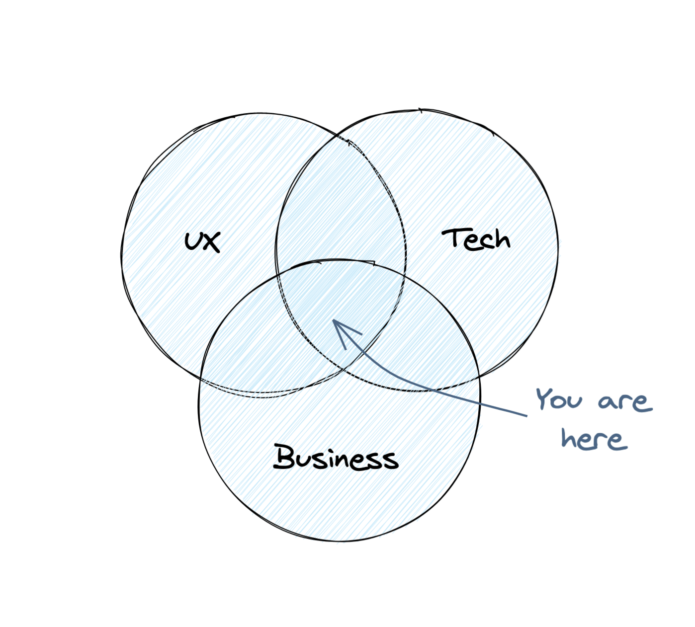

Introduction to Product Management
What does a Product Manager do? Learn what makes this role so unique.

In today’s industry, great Product Management is no longer optional. What it used to be a competitive advantage now is a must-do for all companies that want to stay competitive.
Product Management is all about building the right product. How to build the product right is important, but if your customers don’t care about your product it doesn’t matter. There are thousands of masterpieces out there that nobody cares about.
Moreover, the role of a Product Manager is still a little vague. The nature of the role makes it very dependant on the context. Companies struggle to find common ground to describe what Product Managers should be responsible for.
On this section
What is a Product Manager?
Nobody asked you to show up — Ken Norton
For most companies, Product Management is expendable at first. Product Managers are not the ones building, designing, or selling the product. These specialists could fill the gap if necessary. But in the long run, not having a Product Manager can make the difference between winning and losing.
Product managers are responsible for the ultimate success of the product. They are like the conductor in an orchestra. The conductor helps the orchestra to deliver a great performance to the audience.
Although there is a manager in the job title, Product Managers don’t have people in charge. They need to lead the team without authority.
To discover a product that is valuable, usable and feasible - Marty Cagan
Think about Product Management as the intersection between Business, Technology, and User Experience. A Product Manager pulls all the pieces together by getting feedback from everyone else.
 From Martin Eriksson’s article. Resources section.
-
Business: Product Managers achieve business goals while maximizing return on investment (ROI). This is why product optimization is so important.
-
Technology: Product Managers understand the trade-offs of product implementation during delivery. This is why knowing the tech stack is so important.
-
User Experience: Product Managers understand that people think in terms of conceptual models and not features. This is why talking to users and getting feedback first hand is so important.
A good Product Manager needs to feel comfortable with all three, no matter what their background is.
What Product Managers do?
Product Managers have two key responsibilities. First, they decide which opportunities are worthy to pursue. Second, they define what to build.
Product Managers start by setting the vision for the product. To do so, they need to research the market, the customer and the problem they are trying to solve. They learn as much as possible to come up with a vision for the product. Depending on the organization, this could be a team effort.
After the product vision is clear, Product Managers switch to evangelist mode. Everyone at the company needs to understand the product’s vision so their job is to communicate it. This is fundamental to the success of the product.
Then, Product Managers work on the product strategy. This is how the team is going to achieve that vision. During product development, many challenges will come up. The strategy is the map they need to get the right product out on time.
Once the product is out, Product Managers need to measure the product’s success. They go out and talk to customers directly. They look for ways to improve the product by understanding how customers are using the product.
This is what they do, over and over again.
Product Manager vs. Project Manager
This is one of the most common mistakes companies do. Project Managers are responsible for accomplishing the project. A project usually has a timeline, a scope, and a budget as constraints. They own the schedule and are masters of Gantt charts, not representing the customer.
Product Managers are responsible for the success of the product. To measure that success, it is important to define Key Performance Indicators (KPIs). Although they would need the skill of project management to manage product releases and keep the product on track.
Product Manager vs. Program Manager
Program Managers focuses on various products or project within an organization. A program is a group of related projects or initiatives. They act as a Project Manager with broader and more strategic view.
Program Managers can help Product Managers to set realistic expectations around product development. They understand the organizational context and how changes in resources may affect Product Managers’ plans.
Product Manager vs. Product Marketing Manager
Another common confusion. Product Marketing Managers are responsible for telling the world about that product. This may include positioning, messaging, and pricing. They also provide tools for selling the product and leading marketing programs.
Product Managers, in contrast, are responsible for validating the product with real customers and users.
Their work may overlap sometimes, but they need to work very close during product launches.
Product Manager vs. Product Owner
There are still companies that use these terms interchangeably. But a Product Owner is a concept introduced by Scrum. It is a role that represents the customer in a development team and defines what needs to be built.
Product Owner is the role that a Product Manager usually plays on a Scrum team. Someone can be a Product Owner in a Scrum team without having Product Management skills or background. But won’t be able to build a successful product. Product Management exists beyond any methodology or framework.
Types of Product Managers
A common way to classify Product Managers is their relationship with stakeholders. Stakeholders are the people that have input on the product. Another way is by using their background since Product Managers come from very different backgrounds.
This list is not exhaustive, but it should increase your chances of success when doing the transition.
Internal Product Manager
The internal Product Manager is one of the best introduction roles. They are in charge of building internal tools for the company they work for. And since the number of users is often small, the risk is lower.
This is a great opportunity to learn a lot about technology and do a lot of project management.
Business to Business Product Manager
The next introduction role. Their goals are mostly influenced by the marketing and sales teams. Their focus is on tight deadlines and revenue. The number of users is small but they are not usually the customer.
It is a good opportunity to get creative, especially in dealing with internal and external stakeholders.
Business to Consumer Product Manager
This is the most challenging role because the number of users is often high, so the risk is higher. The level of uncertainty and pressure is strong since the company can lose money on any misstep.
This a great opportunity to learn, especially doing user testing in a fast-paced environment.
Technical Product Manager
A common role when the transition to comes from Engineering is the Technical Product Manager. It can also exist an overlap with any of the types above and thus, have any number of users depending on the industry. The key difference is that this role focuses on the complex and highly technical aspects of a product.
This is a great opportunity for former engineers that don’t have much interest in design or marketing and still want to work very close to technology.
Skills of a Product Manager
For new entrants in this position, it’s hard to devise which skills we need to acquire. In essence, Product Management is a discipline with a broader set of definitions and expectations that makes this career interesting but unclear at the moment of jumping on it.
“It is precisely this combination of deep customer understanding with the ability to apply technology to solve customer problems that enables a strong product person.” - Marty Cagan
The next one is an attempt to list the core competencies that are the baseline for any PM and that you will naturally improve over the years.
-
Execution
As a Product Manager, you ship new features with a regular cadence, run squad process, and meetings. You are responsible for writing precise product requirements and prioritize what to build. You are in charge of aligning your team around business objectives.
-
Technology, UX and Business
You are able to understand the technology stack so that you can communicate with the rest of the team. You know the design patterns of your product and can brainstorm with the designers’ team. As a Product Manager, you negotiate priorities with business stakeholders, set goals, and measure impact. You feel comfortable performing market assessments.
-
Leadership, communication, and visibility
You can lead by using soft influence and effective communication. You are responsible for aligning the team toward the same goal. You can present problems and speak to a broad stakeholder audience in a language they can understand.
-
Problem Discovery
To do an exceptional job, you need to understand customer problems, so their needs are well-represented internally. You talk with your users frequently. You are able to conduct customer research and user testing. As a product manager, you feel comfortable analyzing data to support your product decisions.
-
Vision and strategy
You own the vision and strategy of your product and team. Plan the roadmap and future of the product according to the business necessities. You figure out when to build what in the right way to maximize business impact.
-
Emotional Intelligence
Product Managers are empathetic with the team, stakeholders, and users. You inspire people and help the team reach its full potential. You feel comfortable taking and communicating hard decisions.
How to Find Great Product Managers
There’s a famous essay from Ken Norton about how to find great Product Managers. He explains that the process depends on the environment you are hiring for.
At a startup, you need strong generalists. People that can deal with changing priorities, multiple tasks and high levels of uncertainty. People that are curious and can adapt quickly.
At a big company, you need specialization. People with a deep understanding in a specific aspect. Companies hire them for a very specific role and chances are it won’t change much over time.
Here is a list of the things you should look in a Product Manager, regardless of the environment you are hiring for:
- Smarter than you: Candidates with raw intellectual horsepower mean high problem-solving skills. Favor this over experience.
- Strong technical background: Candidates with engineer background can relate with engineers and grasp technical details. Make sure the person already did the transition because it can be hard.
- Strong product instincts and creativity: Candidates that know what makes a great product and can think out of the box.
- True leadership: The ability to lead people with no authority. Look for interpersonal skills and emotional intelligence.
- Multiple points-of-view vision: Candidates should be able to think about a problem from different angles. Doubt from those that give absolute answers.
- Shipped something before: There’s is no substitute for launching a product from start to finish, concept to launch.
This is a first draft and a just a glance of what Product Management is. Take the time to learn from the resources below. We keep them up to date!
Do you have any feedback? Please, let us know here.